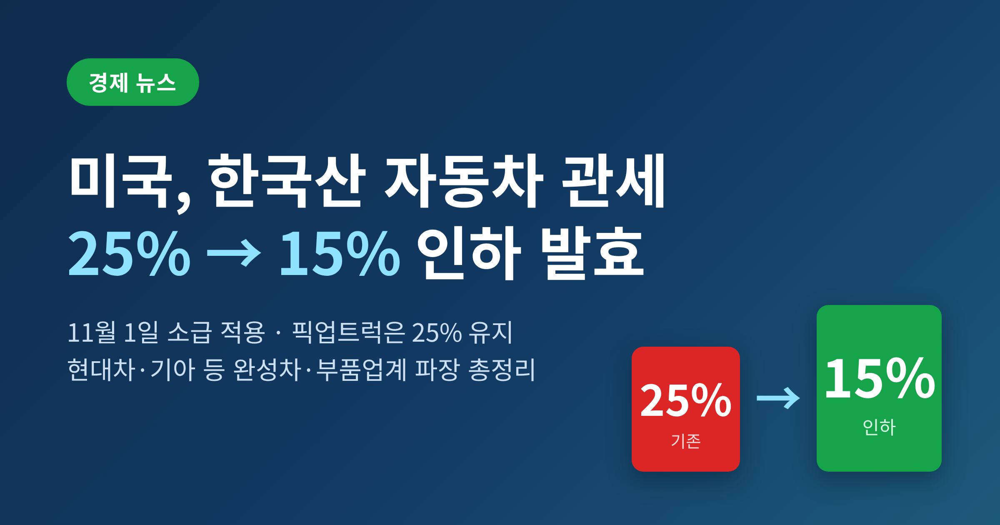
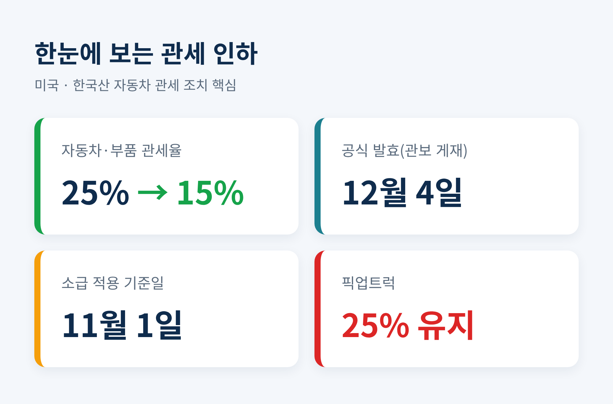
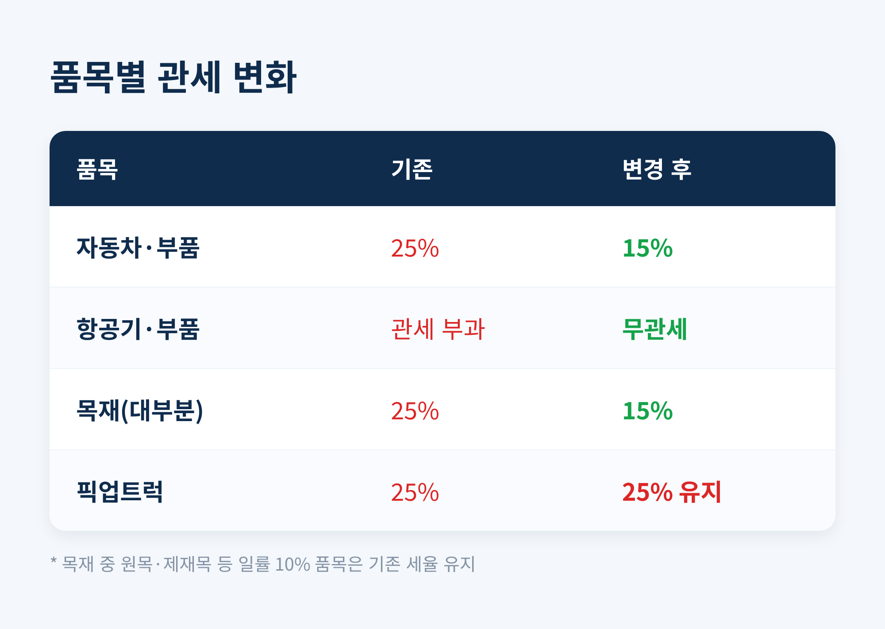
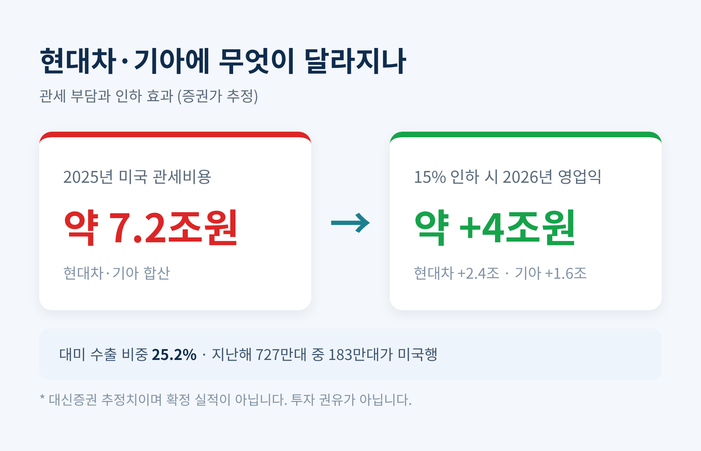
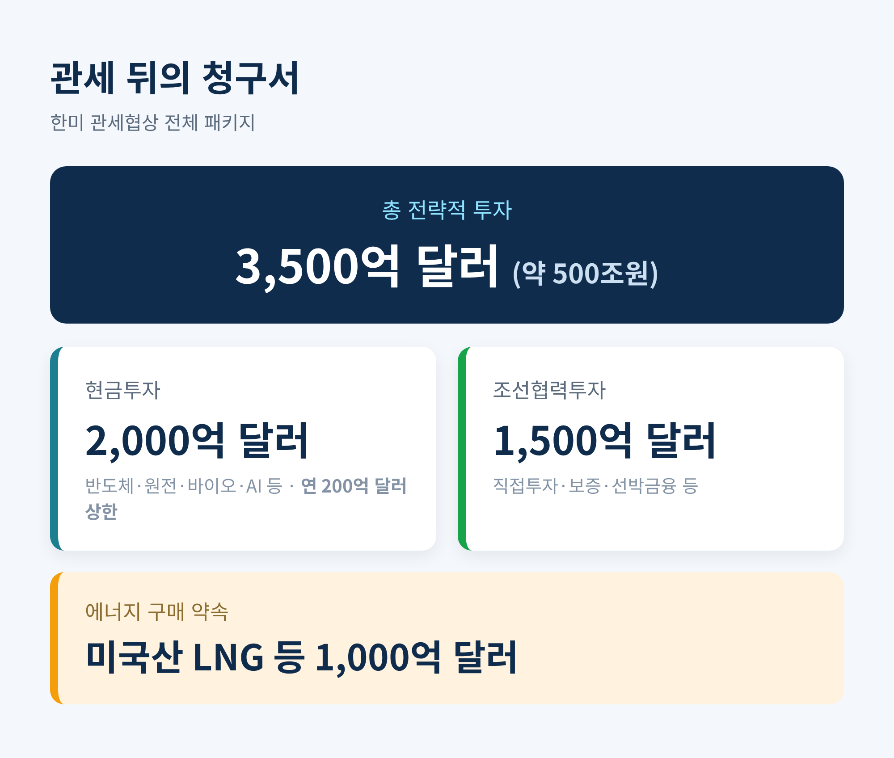
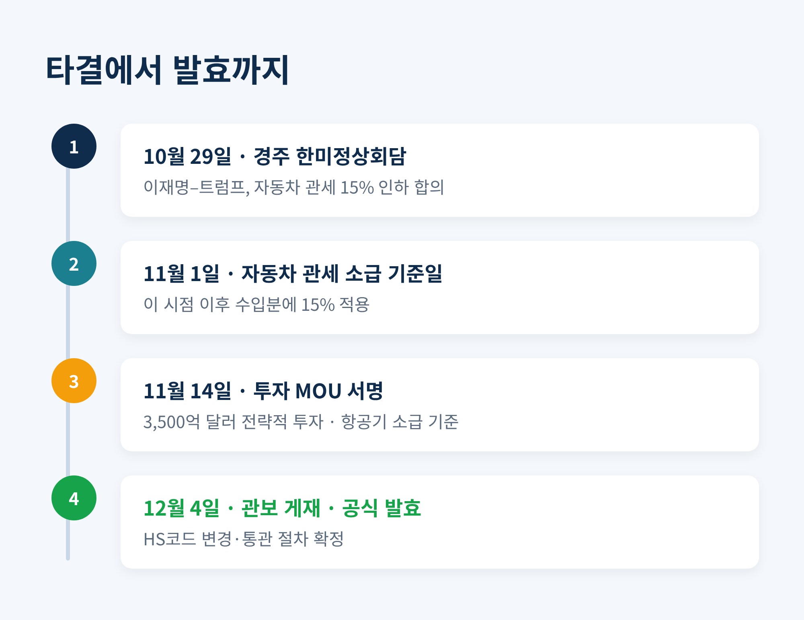

미국 한국산 자동차 관세 15% 인하 발효, 소급·영향 총정리

미국이 한국산 자동차에 매기던 관세를 25%에서 15%로 낮췄습니다. 이번 글에서는 언제 발효됐는지, 어디까지 소급되는지, 그리고 현대차·기아를 비롯한 우리 산업에 무엇이 달라지는지를 정리해 보겠습니다.
먼저 결론부터 말씀드립니다. 관세율은 절반 가까이 내려갔고, 적용 기준일은 지난해 11월 1일로 소급됐습니다. 다만 픽업트럭은 여전히 25%가 붙습니다.
무슨 일이 있었나
미국 상무부와 무역대표부(USTR)는 한국산 자동차·부품 관세를 15%로 낮추는 내용을 연방관보에 실었습니다. 사전공개는 현지시간 12월 3일, 공식 게재는 12월 4일이었습니다. 이날부터 조치가 실제 효력을 갖게 됐습니다.
핵심은 두 개의 날짜입니다. 발효는 12월 4일이지만, 인하된 세율이 적용되는 기준일은 소급해 2025년 11월 1일 0시 1분(미 동부시간)로 확정됐습니다. 그 시점 이후 소비 목적으로 미국에 들어온 한국산 자동차와 부품이 15% 세율의 대상입니다.
발효까지 시차가 있었던 이유는 단순합니다. 관보 게재와 HS코드(HTSUS) 변경 같은 미국 내부의 이행 절차가 필요했기 때문입니다. 그사이 통관 현장에서는 혼선이 있었지만, 소급 기준일이 명확해지며 상당 부분 정리됐습니다.
이 25%라는 세율의 뿌리도 짚어둘 필요가 있습니다. 트럼프 2기 행정부는 무역확장법 232조와 상호관세를 앞세워 주요 교역국의 자동차에 고율 관세를 매겼습니다. 한국산 자동차 역시 그 파고를 피하지 못했습니다. 이번 인하는 그 흐름 속에서, 협상을 통해 부담을 절반 가까이 덜어낸 결과입니다.

자동차만 내린 게 아닙니다
이번 조치는 자동차에 국한되지 않습니다. 품목마다 폭이 다릅니다.
항공기·부품은 인하 폭이 가장 큽니다. 상호관세와 철강·알루미늄·구리 등에 붙던 무역확장법 232조 관세가 전면 철폐돼, 한미 자유무역협정(FTA) 기준을 충족하면 무관세 수출이 가능해집니다. 이 조치는 11월 14일, 한미 전략적 투자 양해각서(MOU) 서명일로 소급됩니다.
목재 제품도 숨통이 트였습니다. 현재 25%가 부과되고 2026년 1월부터 최대 50%까지 오를 예정이었으나, 대부분 15%로 낮아졌습니다. 다만 원목·제재목처럼 일률적으로 10%가 붙던 품목은 기존 세율이 유지됩니다.
예외도 분명합니다. 픽업트럭은 인하 대상에서 빠졌습니다. 미국은 한미 FTA 체계에서도 픽업트럭 25%를 지켜왔고, 이번에도 EU·일본과 똑같이 25%를 매깁니다.

왜 중요한가 — 현대차·기아의 부담
관세는 그동안 우리 완성차 업계의 발목을 잡아온 무거운 짐이었습니다.
숫자로 보면 실감이 납니다. 2025년 한 해 현대차·기아가 미국에서 부담한 관세 비용은 약 7조2,000억원으로 추정됩니다. 2025년 1분기에만 현대차 8,600억원, 기아 7,500억원, 합쳐서 1조6,100억원가량이 관세로 빠져나갔습니다.
경쟁 조건도 불리했습니다. 일본과 EU는 이미 2025년 9월부터 15% 관세를 적용받고 있었습니다. 토요타·폭스바겐과 미국 시장에서 맞붙는 현대차·기아로서는, 같은 출발선에 서기까지 몇 달을 더 기다린 셈입니다.
미국 시장의 무게도 큽니다. 현대차그룹의 대미 수출 비중은 25.2%에 달합니다. 지난해 727만대 가운데 183만대가 미국으로 향했습니다. 이 시장의 비용 구조가 바뀌면 그룹 전체 손익이 흔들립니다.

그렇다면 인하 효과는 얼마나 될까요. 대신증권은 관세가 15%로 내리면 2026년 연간 영업이익이 현대차 약 2조4,000억원, 기아 약 1조6,000억원, 합쳐 약 4조원 늘어날 것으로 추정했습니다. 다만 이는 확정된 실적이 아니라 증권가의 전망치입니다. 참고로 이 글은 특정 종목의 매수나 매도를 권하는 글이 아니며, 투자 판단과 그 책임은 오롯이 투자자 본인에게 있다는 점을 밝혀 둡니다.
영향은 완성차에만 머물지 않습니다. 자동차 부품 협력사도 같은 15% 인하의 우산 아래 들어옵니다. 완성차 한 대 뒤에는 수많은 1·2차 협력업체가 매달려 있습니다. 관세가 내려가면 이들의 대미 납품 여건도 함께 숨을 돌립니다. 그동안 대기업의 관세 부담이 단가 협상 압박으로 번지던 구조를 떠올리면, 이번 조치의 온기는 산업의 아래쪽까지 스밀 여지가 있습니다.
한계도 함께 봐야 합니다. 15%도 결코 가벼운 세율은 아닙니다. 환율과 물류비 부담이 겹쳐 있고, 관세만큼을 떠안은 채 판매가를 동결하면 가격 경쟁력은 지켜도 수익성은 깎입니다. 예전엔 25%라는 벽 앞에서 가격 인상 압력이 컸다면, 지금은 그 압력이 다소 누그러졌을 뿐, 사라진 것은 아닙니다. 완전한 해소가 아니라, 짐이 조금 가벼워진 것에 가깝습니다.
관세 뒤에 놓인 큰 그림 — 투자 패키지
이번 인하는 공짜가 아니었습니다. 관세 협상은 2025년 10월 29일 경주에서 열린 한미정상회담에서 타결됐고, 그 대가로 한국은 상당한 규모의 대미 투자와 구매를 약속했습니다.
핵심은 총 3,500억 달러(약 500조원) 규모의 전략적 투자입니다. 구성을 나눠 보면 이렇습니다.
- 현금투자 2,000억 달러: 반도체·원전·2차전지·바이오·에너지·핵심광물·AI 등에 장기·단계적으로 투입. 연간 투자 한도는 200억 달러로 상한을 뒀습니다.
- 조선협력투자 1,500억 달러: 한국 기업의 직접투자·보증·선박금융 등을 포함.
- 에너지 구매: 여기에 더해 미국산 LNG 등 1,000억 달러 규모의 에너지 제품 구매도 약속했습니다.
연 200억 달러라는 한도는 일종의 안전장치입니다. 한꺼번에 외화가 빠져나가 환율이 출렁이는 상황을 막기 위한 장치로 이해하시면 됩니다.

앞으로의 전망 — 반도체와 의약품
시선은 이제 다음 품목으로 향합니다. 반도체와 의약품입니다.
의약품은 큰 틀이 잡혔습니다. 미국은 한국산 의약품에 붙는 232조 관세율이 15%를 넘지 않도록 하기로 했습니다. FTA나 최혜국(MFN) 세율이 15%보다 낮으면, 그 세율에 232조 관세를 더해 합이 15%가 되도록 설계합니다. 특히 바이오시밀러는 1년간 관세가 적용되지 않아, 단기 충격은 제한적일 전망입니다.
반도체도 최악은 피했습니다. 한때 200~300%의 초고율 관세가 거론됐지만, 232조 조사 결과 일부 품목에 25%를 매기는 선에서 정리됐습니다. 한국은 여기서도 15% 상한을 확보했습니다.
다만 방심은 이릅니다. 통상 전문가들은 "협상 타결은 끝이 아니라 시작"이라고 말합니다. 품목별 232조 조치가 계속 이어지는 새로운 통상 질서에 대비해야 한다는 뜻입니다.

정리하면 이렇습니다.
한국산 자동차 관세는 25%에서 15%로 내려갔고, 기준일은 지난해 11월 1일로 소급됐습니다. 현대차·기아의 짐은 가벼워졌지만, 사라진 것은 아닙니다. 그리고 그 대가로 우리는 3,500억 달러의 투자와 1,000억 달러의 에너지 구매를 약속했습니다.
관세 한 줄의 숫자 뒤에는, 이렇게 긴 계산서가 놓여 있습니다.
"관세는 내렸지만, 청구서는 이제부터 시작입니다."
숫자가 조금 낮아졌다고 안심하기보다, 그 뒤에 무엇을 내주었는지까지 함께 읽는 눈이 필요한 때라고 생각합니다.